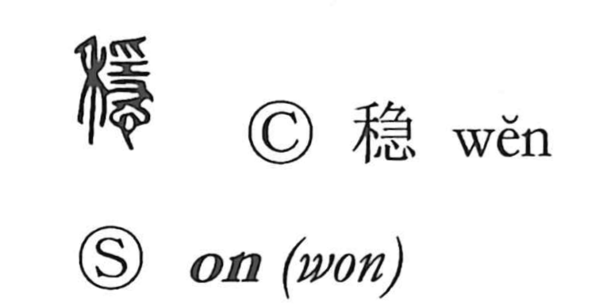

穏

Uncategorized
Kun: odayaka | On: on
calm ・ gentle ・ stable
Explanation
Originally written as 穩, this picto-phonetic character combines 禾, the grain plant, with 隠 as its core. Shirakawa reads 隠 as a ritual scene: a curse implement of the 工 shape grasped by hands above and below is used to veil the gods, while 念 conveys the heart’s cautious, watchful state during that act. Placed before the gods’ ladder 阜—the mound by which deities descend and ascend—the figure signifies complete concealment. With 禾 added, the whole expresses a prayer that farming proceed mildly and smoothly, hence the senses of calmness and gentleness. The modern standard form omits the crucial implement, which obscures the original religious nuance.